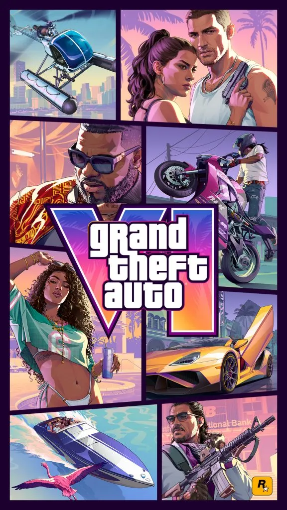

TOP HOBBYHOBBY 01
Grand Theft Auto VI
Mijn absolute grootste hobby is alles wat met Grand Theft Auto VI te maken heeft. Ik kijk er ontzettend naar uit — het is misschien wel de game waar ik het meest naar uitkijk ooit. Rockstar Games belooft een enorme, levendige open wereld rondom Leonida, met als kloppend hart de terugkeer van het iconische Vice City.
Het verhaal draait om Jason en Lucia, en dat spreekt me enorm aan: een duo dat samen een crimineel pad aflegt, met personages die er eindelijk levensecht uitzien. De graphics die tot nu toe getoond zijn tillen alles naar een volgend niveau — van het licht op het water tot de details in de straten van Vice City. Ik volg elk nieuw stukje informatie, elke trailer en elke uitgelekte screenshot, en tel de dagen af tot ik zelf door Leonida kan rijden.
- 🗺️ Open wereld — Leonida
- 🌆 Terugkeer van Vice City
- 👥 Jason & Lucia als hoofdpersonages
- ✨ Next-gen graphics & verhaal
📌 Plaats de officiële cover in images/gta6-cover.jpg om de placeholder hierboven te vervangen.